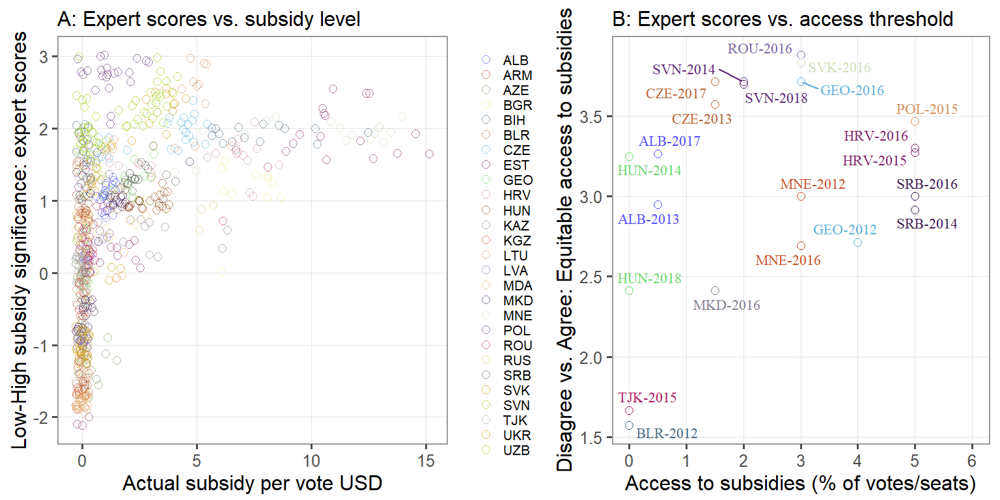
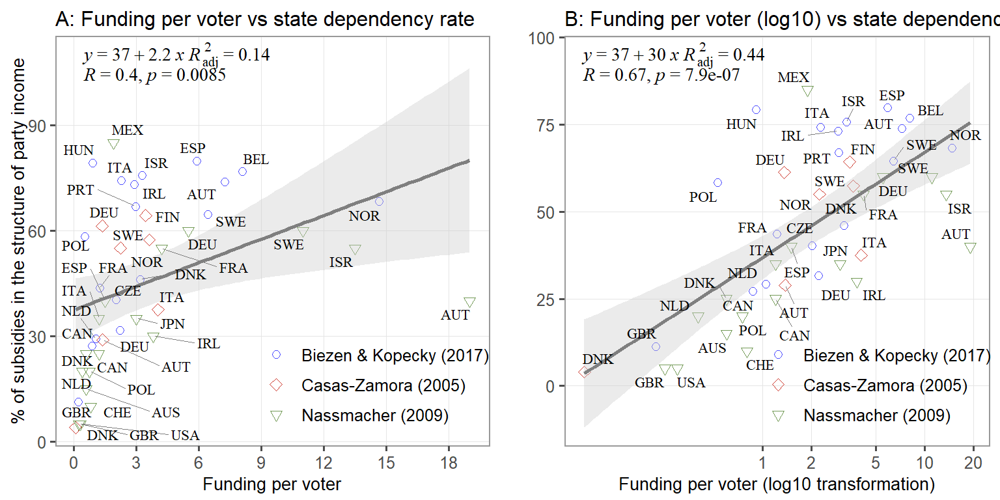

![]()

Direct public funding of political parties: between proxy measures and hard data (2)
public funding of parties
hard data
post-communist regimes
In this blogpost I analyse the development of public funding regimes in postcommunist polities
In the previous blogpost, I argued that binary indicators of party funding such presence vs absence of public funding, donation or spending caps are poor proxies to use in research assessing the impact of financing regulations on political competition, corruption, or other phenomena of interest. The same applies to aggregate indexes of party and campaign funding, which combine different regulatory dimensions (donation caps + spending caps + public funding + transparency) and derive a composite measure through their addition or some alternative procedure. Since comparative cross-national data of party and campaign funding is difficult to obtain, there is a tendency to use expert-based evaluations of different aspects, such as the significance of public funding for the election campaign of parties and candidates or the fairness in the distribution of campaign subsidies. Yet, the critical challenge these measures face is their validity – how accurately expert assessments capture the actual situation. The analysis of two such indexes against real data reveals a rather low validity. Figure 1 presents the results. In the left-hand panel, I correlate my data on the public funding level (Lipcean, 2021) with the expert scores average for the question from the Varieties of Democracy dataset “Is significant public inancing available for parties’ and/or candidates’ campaigns for national office?” (ordinal scale ranging from 0 (no subsidies) to 4 (significant subsidies)) (Coppedge et al., 2020; Coppedge et al., 2021). In the right-hand panel, I correlate my data on the legal requirements to get access to campaign subsidies with the expert scores average from the “Electoral Integrity Project” for the question “Parties/candidates had equitable access to public political subsidies?” (ordinal scale ranging from 1 (strong disagreement) to 5 (strong agreement)) (Norris & Grömping, 2019a, 2019b). As one may notice, the relationship between actual indicators of public funding and expert assessments produce a considerable mismatch, indicating that expert judgements must be treated cautiously in research on political financing.
The above examples show that, as the regulation-based indicators or composite measures, expert evaluations are not valid proxies for the public funding mechanism. Hence, the question is whether one can identify better proxies that can be used by scholars in comparative research assessing the role of public funding in politics. In fact, there is one measure, labelled as state dependency (Casal Bértoa et al., 2014). It reflects the share of state funding in the structure of party income. The higher the share of public funding, the higher the rate of state dependency. Considering that it is a measure derived from real data on public funding, it should be a better measure. While this is true, state dependency might still be a biased measure compared to the actual amount of subsidies per vote. Why so? The main reason is that the the amount of public funding could affect its own share in the structure of party income. The higher the level of state financial support to parties, the lower the incentives to seek private contributions. Moreover, state dependency could still hide considerable variation in public funding per vote despite similar shares in the structure of party income across countries.
To test whether this is the case, one needs both measures: subsidies per vote and the state dependency rate. Unfortunately, I do not have data on the state dependency rate for post-communist regimes, given the lack of reliable data on private financing. Therefore, I borrow data from other cross-national studies that provide both indicators Nassmacher (2009). The relationship between subsidies per vote and state dependency, presented in Figure 2, depicts a mixed picture. Although subsidies per vote and state dependency are positively associated, the strength of the relationship is not sufficient to make them exchangeable.

As one could notice, expert-based indices are poor substitutes to objective indicators of political financing. While much better, still the degree of state dependence is not sufficiently precise to be used as a substitute to the actual level of public funding. This evidence warns against the blind employment of such measurements to study political finance from a comparative perspective.
References
Biezen, I. van, & Kopecký, P. (2017). The Paradox of Party Funding: The Limited Impact of State Subsidies on Party Membership (S. E. Scarrow, P. D. Webb, & T. Poguntke, Eds.; pp. 84–105). Oxford University Press. https://doi.org/10.1093/oso/9780198758631.003.0004
Casal Bértoa, F., Molenaar, F., Piccio, D. R., & Rashkova, E. R. (2014). The world upside down: Delegitimising political finance regulation. International Political Science Review, 35(3), 355–375.
Casas-Zamora, K. (2005). Paying for Democracy: Political Finance and State Funding for Parties. ECPR Press.
Coppedge, M., Gerring, J., Knutsen, C. H., Lindberg, S. I., & Teorell, J. (2021). V-dem dataset: Version 11. https://doi.org/10.23696/VDEMDS21
Coppedge, M., Gerring, J., Knutsen, C. H., Lindberg, S. I., Teorell, J., Altman, D., Bernhard, M., Fish, M. S., Glynn, A., Hicken, A., Lührmann, A., Marquardt, K. M., McMann, K. M., Paxton, P., Pemstein, D., Seim, B., Sigman, R., Skaaning, S.-E., Staton, J. K., … Ziblatt, D. (2020). V-Dem Codebook V10. https://doi.org/10.2139/ssrn.3557877
Lipcean, S. (2021). Dataset on direct public funding of political parties across post-communist regimes 1990-2020. Harvard Dataverse. https://doi.org/10.7910/DVN/TNHZML
Nassmacher, K.-H. (2009). The funding of party competition: Political finance in 25 democracies. Nomos.
Norris, P., & Grömping, M. (2019a). Perceptions of electoral integrity, (PEI-7.0). Harvard Dataverse. https://doi.org/10.7910/DVN/PDYRWL
Norris, P., & Grömping, M. (2019b). Perceptions of electoral integrity (PEI) dataset: codebook. https://dataverse.harvard.edu/citation?persistentId=doi:10.7910/DVN/PDYRWL